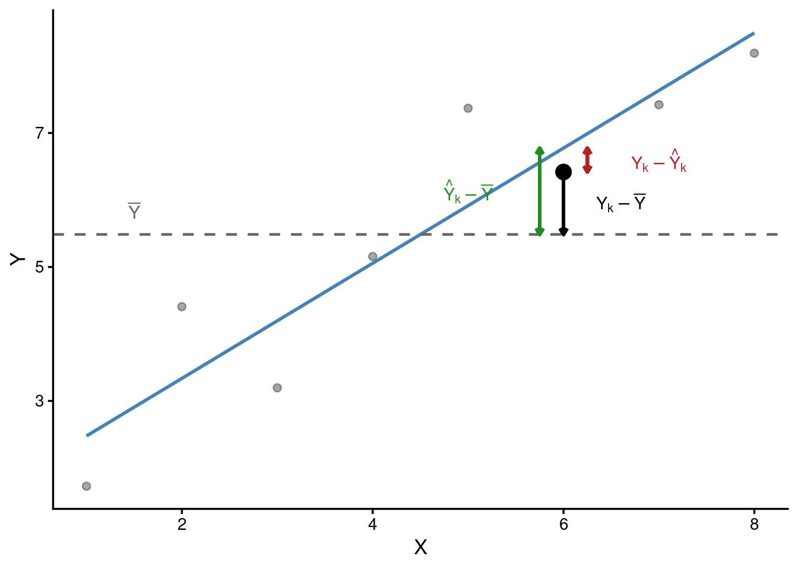
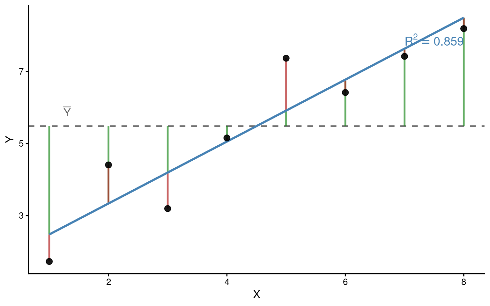

Partição da Soma dos Quadrados e Coeficiente de Determinação
Regressão linear
Estatística
Soma dos quadrados
Coeficiente de determinação
Formulação vetorial
Decomposição vetorial da variabilidade total em componentes da regressão e do resíduo. Derivação geométrica e matricial do coeficiente de determinação \(R^2\).
1 Ligação com os mínimos quadrados
A ideia central dos mínimos quadrados pode ser apresentada sem matrizes, começando por uma decomposição simples:
\[Y_i = \hat{Y}_i + e_i\]
Cada valor observado é escrito como parte explicada pelo modelo (\(\hat{Y}_i\)) mais resíduo (\(e_i\)), isto é, a parte que o modelo não conseguiu explicar.
Antes da linguagem matricial, veja um exemplo pequeno com três observações. Suponha que
\[\mathbf{y} = \begin{bmatrix} 4 \\ 3 \\ 8 \end{bmatrix}, \qquad \hat{\mathbf{y}} = \begin{bmatrix} 3 \\ 5 \\ 7 \end{bmatrix}, \qquad \bar{Y} = 5\]
Então o vetor de resíduos é
\[\mathbf{e} = \mathbf{y} - \hat{\mathbf{y}} = \begin{bmatrix} 1 \\ -2 \\ 1 \end{bmatrix}\]
Esse exemplo já mostra a lógica do ajuste: o modelo produz uma parte prevista, e o que sobra vira resíduo.
No caso geral, escrevemos
\[\mathbf{y} = \mathbf{X}\hat{\boldsymbol{\beta}} + \mathbf{e}\]
onde \(\mathbf{y} \in \mathbb{R}^n\) é o vetor de respostas, \(\mathbf{X}\) é a matriz do modelo, \(\hat{\boldsymbol{\beta}}\) é o vetor de coeficientes estimados e \(\mathbf{e}\) é o vetor de resíduos.
2 Os três vetores fundamentais
Para estudar a variação total de \(Y\), não basta olhar para \(\mathbf{y}\); precisamos comparar \(\mathbf{y}\) com sua média. No exemplo acima, como \(\bar{Y} = 5\),
\[\bar{Y}\mathbf{1} = \begin{bmatrix} 5 \\ 5 \\ 5 \end{bmatrix}\]
O desvio total em relação à média é
\[\mathbf{y} - \bar{Y}\mathbf{1} = \begin{bmatrix} 4 \\ 3 \\ 8 \end{bmatrix} - \begin{bmatrix} 5 \\ 5 \\ 5 \end{bmatrix} = \begin{bmatrix} -1 \\ -2 \\ 3 \end{bmatrix}\]
A parte explicada pelo modelo, medida em relação à mesma média, é
\[\hat{\mathbf{y}} - \bar{Y}\mathbf{1} = \begin{bmatrix} 3 \\ 5 \\ 7 \end{bmatrix} - \begin{bmatrix} 5 \\ 5 \\ 5 \end{bmatrix} = \begin{bmatrix} -2 \\ 0 \\ 2 \end{bmatrix}\]
E o resíduo continua sendo
\[\mathbf{e} = \begin{bmatrix} 1 \\ -2 \\ 1 \end{bmatrix}\]
Agora aparece a decomposição mais importante deste capítulo:
\[\underbrace{\mathbf{y} - \bar{Y}\mathbf{1}}_{\text{desvio total}} = \underbrace{(\hat{\mathbf{y}} - \bar{Y}\mathbf{1})}_{\text{parte explicada}} + \underbrace{\mathbf{e}}_{\text{resíduo}}\]
No exemplo,
\[\begin{bmatrix} -1 \\ -2 \\ 3 \end{bmatrix} = \begin{bmatrix} -2 \\ 0 \\ 2 \end{bmatrix} + \begin{bmatrix} 1 \\ -2 \\ 1 \end{bmatrix}\]
Essa igualdade resume a interpretação estatística e vetorial da regressão: a variação total em torno da média é decomposta em uma parte explicada pelo modelo e uma parte não explicada.
3 Quando a parte explicada e o resíduo ficam perpendiculares
No exemplo anterior, a parte explicada e o resíduo não se misturam. Isso pode ser verificado diretamente pelo produto escalar:
\[\begin{bmatrix} -2 & 0 & 2 \end{bmatrix} \begin{bmatrix} 1 \\ -2 \\ 1 \end{bmatrix} = (-2)(1) + 0(-2) + 2(1) = 0\]
Quando esse produto dá zero, dizemos que os vetores são perpendiculares. Em linguagem técnica, eles são ortogonais.
Essa perpendicularidade tem uma leitura muito útil em que a parte explicada e o resíduo carregam contribuições diferentes da variação total. O que já foi explicado pelo modelo não reaparece no resíduo.
No método dos mínimos quadrados com intercepto, essa propriedade vale em geral:
\[ (\hat{\mathbf{y}} - \bar{Y}\mathbf{1})^\top \mathbf{e} = 0 \]
Ela é uma consequência do próprio critério de ajuste: os resíduos ficam sem componente na direção explicada pelo modelo.
4 Partição via Teorema de Pitágoras
Como a parte explicada e o resíduo são perpendiculares, o Teorema de Pitágoras pode ser aplicado ao vetor de desvio total:
\[\|\mathbf{y} - \bar{Y}\mathbf{1}\|^2 = \|\hat{\mathbf{y}} - \bar{Y}\mathbf{1}\|^2 + \|\mathbf{e}\|^2\]
No exemplo pequeno,
\[\|\mathbf{y} - \bar{Y}\mathbf{1}\|^2 = (-1)^2 + (-2)^2 + 3^2 = 14\]
\[\|\hat{\mathbf{y}} - \bar{Y}\mathbf{1}\|^2 = (-2)^2 + 0^2 + 2^2 = 8\]
\[\|\mathbf{e}\|^2 = 1^2 + (-2)^2 + 1^2 = 6\]
Logo,
\[14 = 8 + 6\]
Em linguagem estatística, essas três quantidades são chamadas de somas dos quadrados:
Partição da soma dos quadrados
\[SQ_{Total} = SQ_{Reg} + SQ_{Res}\]
| Componente | Definição | Leitura pedagógica |
|---|---|---|
| \(SQ_{Total}\) | \(\sum (Y_i - \bar{Y})^2\) | comprimento ao quadrado do desvio total |
| \(SQ_{Reg}\) | \(\sum (\hat{Y}_i - \bar{Y})^2\) | comprimento ao quadrado da parte explicada |
| \(SQ_{Res}\) | \(\sum (Y_i - \hat{Y}_i)^2\) | comprimento ao quadrado do resíduo |
No exemplo do texto: \(SQ_{Total} = 36.13\), \(SQ_{Reg} = 31.032\), \(SQ_{Res} = 5.098\).
Verificação: \(31.032 + 5.098 = 36.13\) \(\approx\) \(36.13\) ✓
5 Definição do coeficiente de determinação \(R^2\)
Depois da partição, fica natural perguntar: qual fração da variação total ficou na parte explicada pelo modelo?
A resposta é o coeficiente de determinação:
\[R^2 = \frac{SQ_{Reg}}{SQ_{Total}} = 1 - \frac{SQ_{Res}}{SQ_{Total}}\]
A interpretação geométrica é direta: \(R^2\) é a proporção entre comprimentos ao quadrado. Ele compara o tamanho da parte explicada com o tamanho total da variação em torno da média.
No exemplo pequeno,
\[R^2 = \frac{8}{14} \approx 0.5714\]
Ou seja, cerca de \(57\%\) da variação total ficou na parte explicada.
No caso geral, como \(0 \leq SQ_{Reg} \leq SQ_{Total}\), temos \(0 \leq R^2 \leq 1\):
- \(R^2 = 0\): o modelo não explica a variação em torno da média;
- \(R^2 = 1\): toda a variação é explicada pelo modelo;
- \(0 < R^2 < 1\): parte da variação é explicada e parte permanece no resíduo.
No exemplo do texto: \(R^2 = \dfrac{31.032}{36.13} = 0.8589\).
6 Relação entre \(R^2\) e a correlação de Pearson
Na regressão linear simples (com um único preditor \(X\)), o coeficiente de determinação é exatamente o quadrado da correlação de Pearson:
\[R^2 = r^2\]
Essa igualdade mostra que, no caso simples, explicar bem a variação de \(Y\) equivale a ter forte alinhamento linear entre as variações de \(X\) e \(Y\).
Podemos demonstrar isso a partir da inclinação da reta de mínimos quadrados. No modelo simples,
\[\hat{\beta}_1 = \frac{SQ_{XY}}{SQ_X}\]
Como
\[\hat{Y}_i - \bar{Y} = \hat{\beta}_1(X_i - \bar{X})\]
segue que
\[SQ_{Reg} = \sum_{i=1}^n (\hat{Y}_i - \bar{Y})^2 = \hat{\beta}_1^2 \sum_{i=1}^n (X_i - \bar{X})^2 = \frac{SQ_{XY}^2}{SQ_X^2} \cdot SQ_X = \frac{SQ_{XY}^2}{SQ_X}\]
Portanto,
\[R^2 = \frac{SQ_{Reg}}{SQ_{Total}} = \frac{SQ_{XY}^2 / SQ_X}{SQ_Y} = \frac{SQ_{XY}^2}{SQ_X \cdot SQ_Y} = \left(\frac{SQ_{XY}}{\sqrt{SQ_X \cdot SQ_Y}}\right)^2 = r^2\]
Na regressão múltipla, \(R^2\) continua sendo a fração da soma dos quadrados explicada pelo modelo, mas já não coincide com o quadrado de uma única correlação bivariada.
Verificação no exemplo do texto: \(r = 0.9268\), \(r^2 = 0.8589\), \(R^2 = 0.8589\) ✓
7 Visualização da partição

8 Formulação matricial
Depois de entender a decomposição numericamente, vale registrá-la na forma compacta usada em álgebra linear. Definimos:
- \(\mathbf{H} = \mathbf{X}(\mathbf{X}^\top\mathbf{X})^{-1}\mathbf{X}^\top\): matriz que extrai a parte explicada do vetor de respostas;
- \(\mathbf{H}_\mathbf{1} = \dfrac{\mathbf{1}\mathbf{1}^\top}{n}\): matriz que extrai a parte constante associada à média;
- \(\mathbf{M} = \mathbf{I} - \mathbf{H}_\mathbf{1}\): matriz que remove a média e deixa o desvio total em torno dela.
Assim,
\[\hat{\mathbf{y}} = \mathbf{H}\mathbf{y}, \qquad \bar{Y}\mathbf{1} = \mathbf{H}_\mathbf{1}\mathbf{y}, \qquad \mathbf{e} = (\mathbf{I} - \mathbf{H})\mathbf{y}\]
As três somas dos quadrados ficam:
\[SQ_{Total} = \|\mathbf{y} - \bar{Y}\mathbf{1}\|^2 = \mathbf{y}^\top\mathbf{M}\mathbf{y}\]
\[SQ_{Reg} = \|\hat{\mathbf{y}} - \bar{Y}\mathbf{1}\|^2 = \mathbf{y}^\top(\mathbf{H} - \mathbf{H}_\mathbf{1})\mathbf{y}\]
\[SQ_{Res} = \|\mathbf{e}\|^2 = \mathbf{y}^\top(\mathbf{I} - \mathbf{H})\mathbf{y}\]
Portanto,
\[R^2 = \frac{\mathbf{y}^\top(\mathbf{H} - \mathbf{H}_\mathbf{1})\mathbf{y}}{\mathbf{y}^\top\mathbf{M}\mathbf{y}}\]
Só agora vale introduzir os nomes técnicos: \(\mathbf{H}\) e \(\mathbf{H}_\mathbf{1}\) são matrizes de projeção, pois extraem partes específicas de \(\mathbf{y}\), e aplicá-las duas vezes não altera o resultado já obtido.
Resumo: partição da soma dos quadrados na linguagem matricial
| Componente | Leitura pedagógica | Expressão matricial |
|---|---|---|
| \(SQ_{Total}\) | comprimento ao quadrado do desvio total | \(\mathbf{y}^\top\mathbf{M}\mathbf{y}\) |
| \(SQ_{Reg}\) | comprimento ao quadrado da parte explicada | \(\mathbf{y}^\top(\mathbf{H} - \mathbf{H}_\mathbf{1})\mathbf{y}\) |
| \(SQ_{Res}\) | comprimento ao quadrado do resíduo | \(\mathbf{y}^\top(\mathbf{I} - \mathbf{H})\mathbf{y}\) |
| \(R^2\) | fração explicada da variação total | \(\dfrac{\mathbf{y}^\top(\mathbf{H} - \mathbf{H}_\mathbf{1})\mathbf{y}}{\mathbf{y}^\top\mathbf{M}\mathbf{y}}\) |